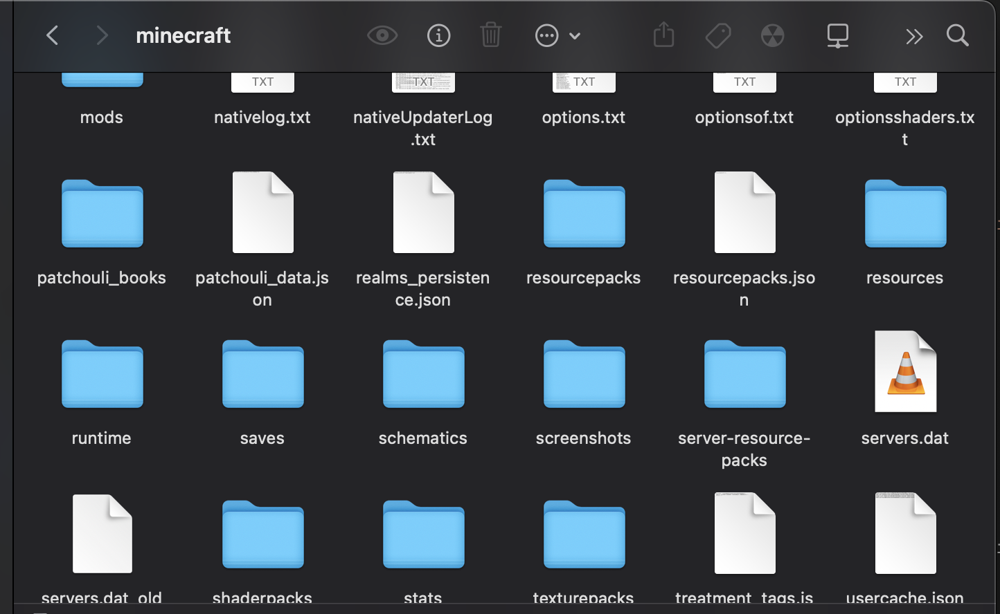
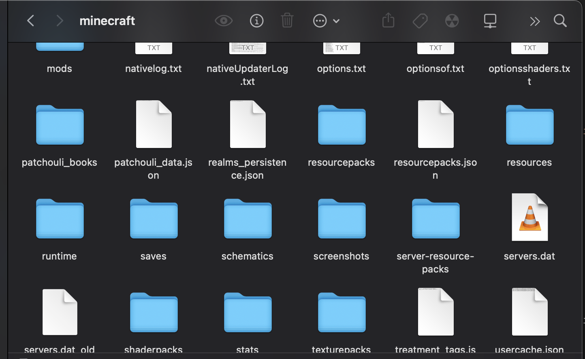

As a child, I played countless video games and watched numerous tech-focused YouTube videos. I have always been designated as the "computer person" in my family and even within my friend group. While playing my favorite games at the time, Poptropica and Tanki Online, I was mystified by the complex map/world-switching system in the former and the death detection system in the latter. As I grew older, I tackled experimenting with mods and automating redstone farms in Minecraft. Eventually, I stumbled upon Scratch and Snap! and embarked on my journey there. Today, my knowledge has expanded to encompass Java, C++, and Python, including concepts like object-oriented programming, recursion, and more. Of course, I also had to learn HTML and CSS to code this website. However, I'm still striving to expand my horizons and solve real-world problems with computer science. Feel free to explore the rest of my website.
 
